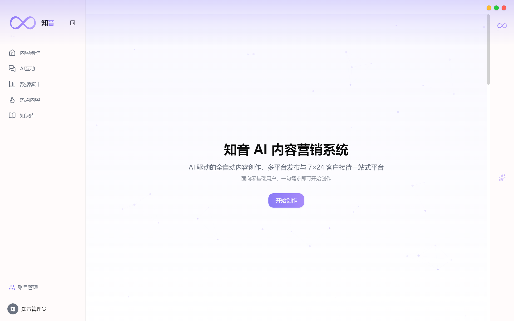
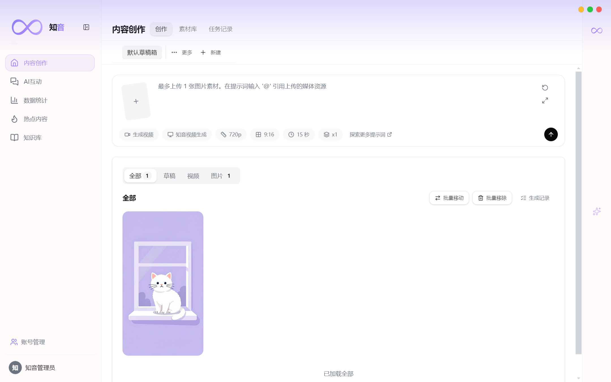
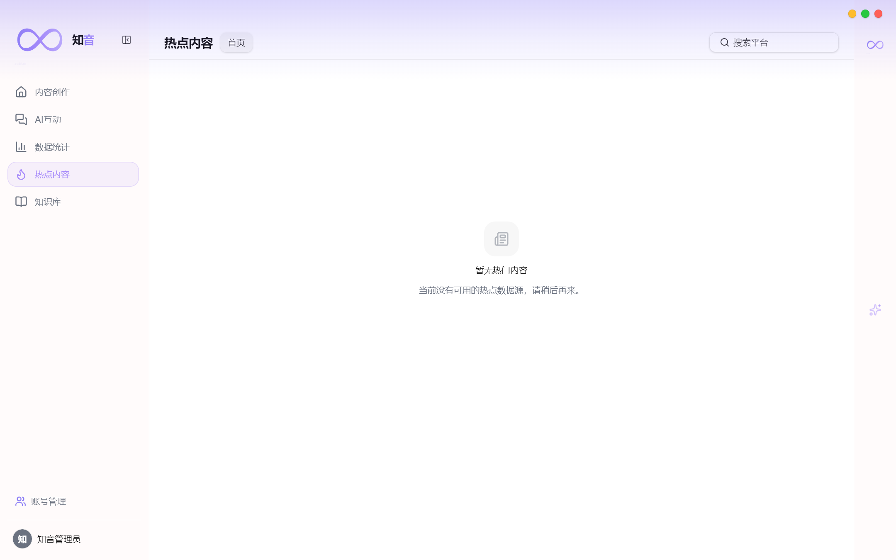
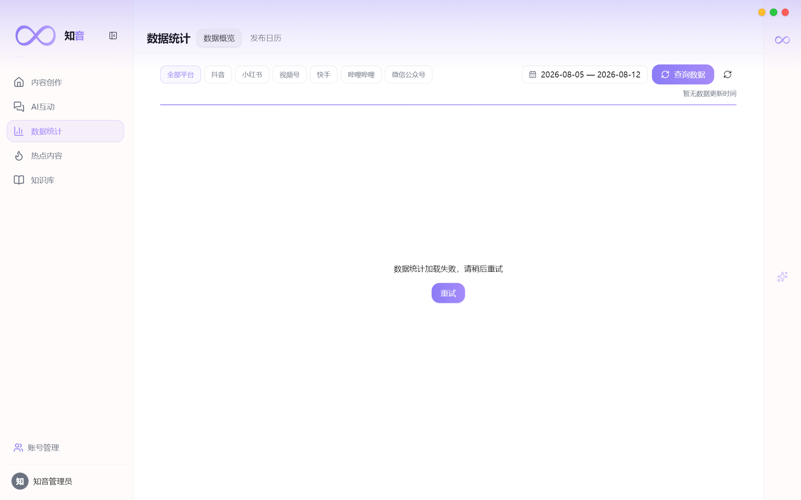
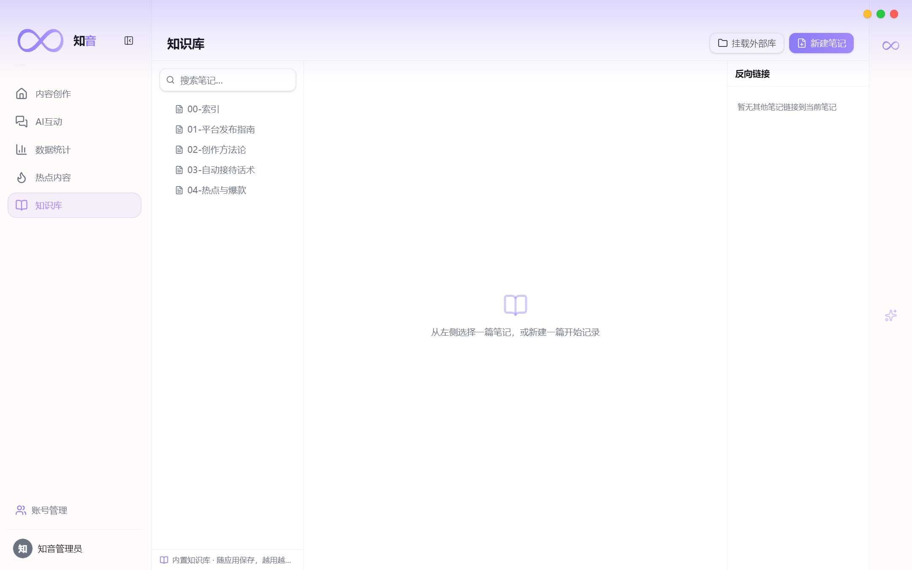

帮助中心
知音 · 图文使用手册
从安装到 AI 创作、多平台发布、客户接待与数据管理，跟着图文一步步上手。
快速开始
下载、安装、启动
安装包已包含本地运行所需组件，无需手动安装数据库或环境变量。
第一步：获取并安装
- 打开首页点击「下载知音」。
- 双击安装包，Windows 提示「已保护你的电脑」时选择「更多信息 → 仍要运行」。
- 安装完成后从桌面打开知音。
- 应用会自动完成基础数据初始化，稍等片刻即可进入主页。

核心功能
一句话，从创作到发布
右侧输入框那句需求，AI 会帮你生成文案、图片、视频草稿，并持续推进任务。
AI 内容创作
- 在首页输入框描述你的需求，例如「做一条美食探店短视频」。
- 点击发送，任务进入「内容创作」页。
- 实时查看 AI 生成进度与草稿。
- 可继续多轮修改，或直接进入发布流程。

热点内容 & AI 互动
- 「热点内容」帮你发现当下流行的选题与素材。
- 「AI 互动」汇总评论与私信，自动生成回复建议。
- 可按需切换「自动接待」或「人工介入」。

数据与作品管理
- 进入「数据统计」查看作品数据与趋势。
- 「任务记录」保存历史任务，可随时回看或继续处理。
- 作品与发布记录均在本地留档。

知识库
- 把常用资料、规则与素材存入「知识库」。
- AI 创作时会优先参考这些内容，让输出更贴合你的账号。
- 首次启动已内置基础知识，可随时补充。

常见问题
你可能想知道
需要安装数据库或环境变量吗？
不需要。知音安装包已内置本地运行所需组件，下载安装后即可使用。
Windows 提示“已保护你的电脑”怎么办？
点击「更多信息」→「仍要运行」即可正常安装。
后续版本如何更新？
安装后，知音会在后台检查并下载新版本，下载完成后再由你选择「现在安装」或「稍后」。
为什么第一次打开稍慢？
首次启动需要初始化本地服务，通常 1-3 分钟；之后会明显加快。
数据保存在哪里？
账号与作品数据保存在你的电脑本地，不依赖额外服务器。